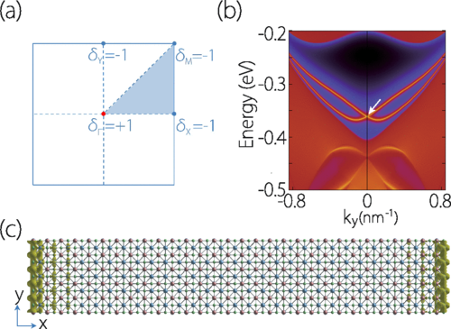

Dec.2 2017
Figure (a) Product of band parity eigenvalues at the four TRIM points for ML-HfGeTe. (b) Surface energy spectrum for a semi-infinite ML-HfGeTe, with a single boundary running along y direction. Topological edge states can be observed. (c) Charge density distribution for edge state.
Dirac points in two-dimensional (2D) materials have been a fascinating subject of research, with graphene as the most prominent example. However, the Dirac points in existing 2D materials, including graphene, are vulnerable against spin-orbit coupling (SOC). Here, based on first-principles calculations and theoretical analysis, we propose a new family of stable 2D materials, the HfGeTe-family monolayers, which host so-called spin-orbit Dirac points (SDPs) close to the Fermi level. These Dirac points are special in that they are formed only under significant SOC, hence they are intrinsically robust against SOC. We show that the existence of a pair of SDPs are dictated by the nonsymmorphic space group symmetry of the system, which are very robust under various types of lattice strains. The energy, the dispersion, and the valley occupation around the Dirac points can be effectively tuned by strain. We construct a low-energy effective model to characterize the Dirac fermions around the SDPs. Furthermore, we find that the material is simultaneously a 2D Z2 topological metal, which possesses nontrivial Z2 invariant in the bulk and spin-helical edge states on the boundary. From the calculated exfoliation energies and mechanical properties, we show that these materials can be readily obtained in experiment from the existing bulk materials. Our result reveals HfGeTe-family monolayers as a promising platform for exploring spin-orbit Dirac fermions and topological phases in two-dimensions.